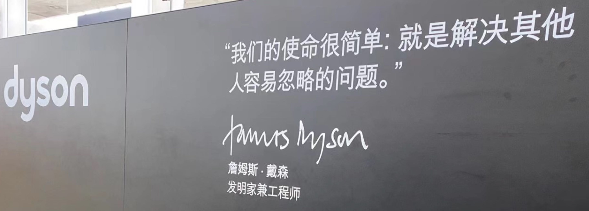

网络文章@202409
This is a big lesson. As a field, we still have not thoroughly learned it, as we are continuing to make the same kind of mistakes. To see this, and to effectively resist it, we have to understand the appeal of these mistakes. We have to learn the bitter lesson that building in how we think we think does not work in the long run. The bitter lesson is based on the historical observations that 1) AI researchers have often tried to build knowledge into their agents, 2) this always helps in the short term, and is personally satisfying to the researcher, but 3) in the long run it plateaus and even inhibits further progress, and 4) breakthrough progress eventually arrives by an opposing approach based on scaling computation by search and learning. The eventual success is tinged with bitterness, and often incompletely digested, because it is success over a favored, human-centric approach. 这是一个很大的教训。作为一个领域，我们还没有彻底学透 因为我们继续犯同样的错误。查看 为了有效地抵制这种情况，我们必须了解 这些错误。我们必须吸取惨痛的教训 我们认为我们的想法从长远来看是行不通的。惨痛的教训是 基于历史观察：1)人工智能研究人员经常 试图为他们的代理人建立知识，2)这总是有帮助的 短期内，研究人员个人感到满意，但是 3) 从长远来看，它会陷入停滞状态，甚至阻碍进一步的进展，4) 最终通过基于相反的方法取得突破性进展 通过搜索和学习来扩展计算。最终的成功是 带有苦味，而且常常不能完全消化，因为它 成功胜于受青睐的、以人为本的方法。
One thing that should be learned from the bitter lesson is the great power of general purpose methods, of methods that continue to scale with increased computation even as the available computation becomes very great. The two methods that seem to scale arbitrarily in this way are search and learning. 从惨痛的教训中应该吸取的一件事是伟大的 通用方法的力量，持续扩展的方法的力量 随着计算量的增加，即使可用计算量变为 非常好。这两种方法似乎可以以这种方式任意缩放 正在搜索和学习。
The second general point to be learned from the bitter lesson is that the actual contents of minds are tremendously, irredeemably complex; we should stop trying to find simple ways to think about the contents of minds, such as simple ways to think about space, objects, multiple agents, or symmetries. All these are part of the arbitrary, intrinsically-complex, outside world. They are not what should be built in, as their complexity is endless; instead we should build in only the meta-methods that can find and capture this arbitrary complexity. Essential to these methods is that they can find good approximations, but the search for them should be by our methods, not by us. We want AI agents that can discover like we can, not which contain what we have discovered. Building in our discoveries only makes it harder to see how the discovering process can be done. 从惨痛的教训中我们要吸取的第二点是： 心灵的实际内容极其复杂，无可救药。我们 应该停止尝试寻找简单的方法来思考内容 思维，例如思考空间、物体、多重的简单方法 代理，或对称性。所有这些都是任意的一部分， 本质上是复杂的外部世界。它们不是应该建造的 因为它们的复杂性是无穷无尽的；相反，我们应该只构建 可以找到并捕获这种任意复杂性的元方法。 这些方法的本质是它们可以找到很好的近似值， 但寻找它们应该通过我们的方法，而不是我们自己。我们想要人工智能 可以像我们一样发现的代理，而不是包含我们拥有的内容 发现了。建立在我们的发现之上只会让我们更难了解如何做到这一点 发现过程可以完成。
两台机器 • Buttondown — The Two Machines • Buttondown
As someone interested in the idea of “database” broadly speaking (as you might be, if you are reading this) this is something I’ve had to reckon with when saying what it is I’m actually interested in. Because “patterns for writing to disk efficiently” and “optimizing join orders” are so different but both of interest to me, that I’m forced to conclude there are two different categories of “thing” here and I think of them as “fsync machines” and “join machines.” 作为对广义上的“数据库”概念感兴趣的人（如果您正在阅读本文，您可能就是这样），当我说我真正感兴趣的是什么时，我必须考虑到这一点。因为“模式有效地写入磁盘”和“优化连接顺序”是如此不同，但我都感兴趣，因此我不得不得出结论，这里有两种不同类别的“事物”，我将它们视为“fsync 机器”和“加入机器。”
An fsync machine is concerned primarily with things like ACID. Reliability, failover, and being able to trust that the data is correct. If you're dealing with disk write throughput, you've likely got an fsync machine on your hands. If you're an fsync machine, you don't tend to care too much about complicated computational procedures outside of "shove that data into that buffer as quickly as possible." Storage engines are fsync machines. Most transactional systems are fsync machines, primarily. fsync 机器主要关心诸如 ACID 之类的事情。可靠性、故障转移以及能够相信数据是正确的。如果您正在处理磁盘写入吞吐量，您可能已经拥有一台 fsync 机器。如果您是一台 fsync 机器，除了“尽快将数据推入缓冲区”之外，您不会太关心复杂的计算过程。存储引擎是 fsync 机器。大多数事务系统主要是 fsync 机器。
A join machine wants to evaluate queries. It's concerned with optimizing query operators for a CPU, approximating the optimal order to evaluate joins in, and reading large quantities of data from storage (or memory) as quickly as possible. A join machine often doesn't have to think that much about durability because it's endowed by some other system, be it object storage, or Kafka, or that the data is just static in the first place, like a CSV you got emailed. Data warehouses are join machines. Excel is a join machine. 连接机器想要评估查询。它涉及优化 CPU 的查询运算符、近似计算连接的最佳顺序以及尽快从存储（或内存）中读取大量数据。连接机器通常不必考虑太多关于持久性的问题，因为它是由其他系统赋予的，无论是对象存储还是 Kafka，或者数据本来就是静态的，就像您通过电子邮件收到的 CSV 一样。数据仓库是连接机器。 Excel 是一个连接机器。
Having watched Ph.D. students succeed and fail at four universities, I infer that success in graduate school hinges on three qualities: perseverance, tenacity and cogency. 看过博士学位。学生在四所大学的成功和失败，我推断研究生院的成功取决于三个品质：毅力、坚韧和说服力。
Science is as much an act of persuasion as it is an act of discovery. 科学既是一种说服行为，也是一种发现行为。
Once you've made a discovery, you have to persuade experts that you've made a legitimate, meaningful contribution. This is harder to do than it seems. Simply showing experts "the data" isn't going to work. (Yes, in a perfect world, this would be sufficient.) 一旦你有了发现，你就必须让专家相信你已经做出了合法的、有意义的贡献。这比看起来更难做到。仅仅向专家展示“数据”是行不通的。 （是的，在完美的世界中，这就足够了。）
Instead, you have to spoon-feed the experts. As you write, you have to consciously minimize the amount of time and cognitive pain it takes for them to realize you've made a discovery. 相反，你必须用勺子喂养专家。当你写作时，你必须有意识地尽量减少他们意识到你已经有了发现所需的时间和认知痛苦。
You may have to go "on tour" and give engaging presentations to get people excited about your research. When you give conference talks, you want them eagerly awaiting the next episode. 您可能需要“巡演”并进行引人入胜的演示，以使人们对您的研究感到兴奋。当你进行会议演讲时，你希望他们热切地等待下一集。
You will have to write compelling abstracts and introductions that hook the reader and make her feel like investing time in your work. 你必须写出引人注目的摘要和介绍来吸引读者，让他们愿意在你的工作上投入时间。
You will have to learn how to balance clarity and precision, so that your ideas come across without either ambiguity or stifling formality. 你必须学会如何平衡清晰度和精确性，这样你的想法才不会含糊不清或令人窒息的形式。
大学建议：教授的建议 — College tips: Advice from a professor
和教授和同学搞好关系，自律，把学习当做投资看待。
Few students exploit that access, but it's not hard: 很少有学生利用这种访问权限，但这并不难：
- Ask professors about their research. Even the crankiest professor is going to brighten when talking about their own research. If it sounds interesting, ask if they need help in their lab. Professors in fields like science and engineering may even be able to pay you! 向教授询问他们的研究。即使是最脾气暴躁的教授在谈论自己的研究时也会变得高兴起来。如果听起来很有趣，询问他们的实验室是否需要帮助。科学和工程等领域的教授甚至可以付钱给你！
- Go to office hours. Few students take advantage of office hours. It's a chance to get one-on-one mentoring from an expert. Plus, when you ask for a letter of recommendation, the professor will know you. Professors use office hours to measure the quality of their lecture material. If several students come by with the same confusion, it's a signal to clear up that material. 去办公时间。很少有学生利用办公时间。这是获得专家一对一指导的机会。另外，当你索要推荐信时，教授会认识你。教授利用办公时间来衡量他们的讲座材料的质量。如果有几个学生有同样的困惑，那就是一个信号，需要清理这些材料。
- Sit in the front row. A good professor is going to tune the lecture by reading the facial expressions of students. Unfortunately, it's hard to see all the way in the back, so we're really crafting the lecture to those that sit up front, whose faces we can see. 坐在前排。一位好的教授会通过阅读学生的面部表情来调整讲座。不幸的是，很难看到后面的一切，所以我们真的是在为坐在前面的人精心设计讲座，我们可以看到他们的脸。
Watch your health 注意你的健康
It's easy to neglect both physical and mental health in college. 在大学里很容易忽视身体和心理健康。
An irregular diet of ramen, pizza, coffee and beer for four years is not ideal. 四年来不规律地吃拉面、披萨、咖啡和啤酒并不理想。
All-nighters and late nights take their toll. 通宵达旦和熬夜会造成损失。
Cloistering oneself for days on end with little fresh air and activity steadily chips away at well-being. 连续几天将自己与世隔绝，几乎没有新鲜空气和活动，这会逐渐削弱幸福感。
The brain is an organ: a healthy body supports a healthy mind. 大脑是一个器官：健康的身体支持健康的思想。
To stay balanced, eat well, sleep well and exercise in moderation. 为了保持平衡，吃得好，睡得好，适量运动
Take courses from the best teachers 从最好的老师那里学习课程
Don't take your major classes from the "easy" professors. 不要从“简单”的教授那里学习你的专业课程。
Take your major classes from the good professors. 从优秀教授那里学习你的专业课程。
Professor rating sites may grant a relative sense of quality between two professors. They are not necessarily indicators of absolute quality. 教授评级网站可能会赋予两位教授之间相对的质量感。它们不一定是绝对质量的指标。
Ask around among fellow students to figure out the best professors to take. 四处询问同学，找出最适合选的教授。
Avoid professors that are difficult out of cruelty. 避免那些因残忍而难以相处的教授。
If a professor teaches a difficult course as a byproduct of a sincere desire to impart deep knowledge, take that class! 如果一位教授教授一门困难的课程，作为传授深入知识的真诚愿望的副产品，那就参加_这_门课！
Confront your weaknesses 正视自己的弱点
The material you learn in class matters. 您在课堂上学到的材料很重要。
The character you develop outside of class matters a lot more. 你在课堂之外培养的性格更为重要。
College is a chance to systematically confront your personal weaknesses in the safety of a four-year sandbox. 大学是一个在四年沙盒的安全环境中系统地面对个人弱点的机会。
When you start college, make a list of the axes along which you want to see personal growth over the next four years. 当你开始上大学时，列出你希望在未来四年内看到_个人_成长的轴心。
Find the environments that foster that growth. 找到促进这种成长的环境。
这个是PG给14/15岁孩子们做的一个关于如何创业的talk. 非常不错的文章
Most of you probably think that when you're released into the so-called real world you'll eventually have to get some kind of job. That's not true, and today I'm going to talk about a trick you can use to avoid ever having to get a job. 你们中的大多数人可能认为，当您被释放到所谓的现实世界中时，您最终将不得不找到某种工作。这不是真的，今天我要谈谈一个可以用来避免找工作的技巧。
The trick is to start your own company. So it's not a trick for avoiding work, because if you start your own company you'll work harder than you would if you had an ordinary job. But you will avoid many of the annoying things that come with a job, including a boss telling you what to do. 诀窍是创办自己的公司。所以这并不是逃避_工作_的窍门，因为如果你创办自己的公司，你会比从事普通工作时更加努力地工作。但你会避免工作带来的许多烦人的事情，包括老板告诉你该做什么。
How do you get from where you are now to the point where you can start a successful startup? You need three things. You need to be good at some kind of technology, you need an idea for what you're going to build, and you need cofounders to start the company with. 你如何从现在的状态发展到可以成功创业的地步？你需要三件事。你需要擅长某种技术，你需要对你要构建的东西有一个想法，你需要联合创始人来创办公司。
How do you get good at technology? And how do you choose which technology to get good at? Both of those questions turn out to have the same answer: work on your own projects. Don't try to guess whether gene editing or LLMs or rockets will turn out to be the most valuable technology to know about. No one can predict that. Just work on whatever interests you the most. You'll work much harder on something you're interested in than something you're doing because you think you're supposed to. 如何才能擅长技术？您如何选择擅长哪种技术？这两个问题都有相同的答案：致力于自己的项目。不要试图猜测基因编辑、 LLMs或火箭是否会成为最有价值的技术。没有人能预测这一点。只做你最感兴趣的事情。你会在你感兴趣的事情上比你正在做的事情更加努力，因为你认为你应该这样做。
If you really want to learn to program, you have to work on your own projects. You learn so much faster that way. Imagine you're writing a game and there's something you want to do in it, and you don't know how. You're going to figure out how a lot faster than you'd learn anything in a class. 如果你真的想学习编程，你就必须从事自己的项目。这样你学得更快。想象一下，您正在编写一款游戏，并且您想要在其中执行某些操作，但您不知道如何执行。你会发现比在课堂上学习任何东西要快得多。
You don't have to learn programming, though. If you're wondering what counts as technology, it includes practically everything you could describe using the words "make" or "build." So welding would count, or making clothes, or making videos. Whatever you're most interested in. The critical distinction is whether you're producing or just consuming. Are you writing computer games, or just playing them? That's the cutoff. 不过，您不必学习编程。如果您想知道什么才算技术，它几乎包括您可以使用“制造”或“构建”一词描述的所有内容。所以焊接、制作衣服、制作视频都算数。无论你对什么最感兴趣。关键的区别在于你是在生产还是只是在消费。您是在编写电脑游戏，还是只是玩游戏？这就是截止点。
Actually it's easy to get startup ideas once you're good at technology. Once you're good at some technology, when you look at the world you see dotted outlines around the things that are missing. You start to be able to see both the things that are missing from the technology itself, and all the broken things that could be fixed using it, and each one of these is a potential startup. 事实上，一旦你擅长技术，就很容易获得创业想法。一旦你擅长某种技术，当你观察这个世界时，你就会看到一些缺失的东西周围的虚线轮廓。你开始能够看到技术本身所缺失的东西，以及可以使用它来修复的所有损坏的东西，而其中每一个都是一个潜在的初创公司。
At this point I'm going to tell you something you might not want to hear. It really matters to do well in your classes, even the ones that are just memorization or blathering about literature, because you need to do well in your classes to get into a good university. And if you want to start a startup you should try to get into the best university you can, because that's where the best cofounders are. It's also where the best employees are. When Larry and Sergey started Google, they began by just hiring all the smartest people they knew out of Stanford, and this was a real advantage for them. 现在我要告诉你一些你可能不想听的事情。在你的课程中取得好成绩确实很重要，即使是那些只是背诵或喋喋不休地谈论文学的课程，因为你需要在课程中取得好成绩才能进入一所好的大学。如果你想创办一家初创公司，你应该尽力进入最好的大学，因为那里有最好的联合创始人。这也是最好的员工所在的地方。当拉里和谢尔盖创办谷歌时，他们一开始只是雇佣斯坦福大学他们认识的所有最聪明的人，这对他们来说是一个真正的优势。
The empirical evidence is clear on this. If you look at where the largest numbers of successful startups come from, it's pretty much the same as the list of the most selective universities. 经验证据对此很清楚。如果你看看最大数量的成功创业公司来自哪里，你会发现它与最挑剔的大学名单几乎相同。
So the list of what you need to do to get from here to starting a startup is quite short. You need to get good at technology, and the way to do that is to work on your own projects. And you need to do as well in school as you can, so you can get into a good university, because that's where the cofounders and the ideas are. 因此，从这里开始创业所需要做的事情清单非常简短。你需要精通技术，而做到这一点的方法就是致力于你自己的项目。你需要在学校表现得尽可能好，这样你才能进入一所好大学，因为那是联合创始人和想法的所在。
That's it, just two things, build stuff and do well in school. 就这样，只有两件事，建造东西和在学校取得好成绩。
Disarmingly Forthright MSCS Advice
https://nick-black.com/dankwiki/images/8/85/Msadvice.pdf
PhD students are singularly-driven creatures, and take classes for their own, mysterious reasons. Working with one in a group will mean phone calls and emails, pretty much constantly, until the assignment is done. This can be both useful and maddening. In a pinch, they also generally know what’s going on at any given time
博士生是有独特驱动力的生物，他们上课都有自己神秘的原因。与团队中的一个人一起工作意味着要不断地打电话和发电子邮件，直到任务完成。这既有用又令人抓狂。在紧要关头，他们通常也知道在任何特定时间发生了什么。
https://www.paulgraham.com/foundermode.html
Whatever founder mode consists of, it's pretty clear that it's going to break the principle that the CEO should engage with the company only via his or her direct reports. "Skip-level" meetings will become the norm instead of a practice so unusual that there's a name for it. And once you abandon that constraint there are a huge number of permutations to choose from. 无论创始人模式由什么组成，很明显，它都会打破首席执行官只能通过他或她的直接下属与公司接触的原则。 “越级”会议将成为常态，而不是一种非常不寻常的做法，以至于有一个名字。一旦你放弃了这个限制，就有大量的排列可供选择。
[3] I also have another less optimistic prediction: as soon as the concept of founder mode becomes established, people will start misusing it. Founders who are unable to delegate even things they should will use founder mode as the excuse. Or managers who aren't founders will decide they should try to act like founders. That may even work, to some extent, but the results will be messy when it doesn't; the modular approach does at least limit the damage a bad CEO can do. [ 3 ] 我还有另一个不太乐观的预测：一旦创始人模式的概念确立，人们就会开始误用它。那些连应该委托的事情都无法委托的创始人就会以创始人模式为借口。或者不是创始人的管理者会决定他们应该尝试像创始人一样行事。在某种程度上，这甚至可能有效，但如果不起作用，结果就会很混乱；模块化方法至少限制了糟糕的首席执行官可能造成的损害。
The PhD Paradox: A Journey into Academia’s Upside-Down World – Daniel Lemire's blog
评论区也有不同的观点，我觉得看看挺好的。
So why do we keep pushing our youth into this system? It’s all about signaling. A degree, especially a PhD, is like a badge, a shiny sticker that says, “I’m educated.” But here’s the kicker – this badge might not make you more productive or happier. In fact, less time in school and more time in the real world could be the real recipe for success.
Working for three to five years in a row on the same thing is a stretch and requires self-discipline and internal motivation, you will need to learn what works for you, acquire a routine and stick to it. Hiring a Ph.D. means to get someone that has gone thrugh ups and downs and has shown perseverance in the face of adversity.
There’s a lot of variance in the caliber of people, but what rings true about the article is 1. the exploitation and 2. the fact that there is not a happy ending possible for everyone because of resource limitations; so one needs to be fiercely competitive, or brilliant or politically savvy (or all of that).
我们的使命很简单：就是解决其他人容易忽略的问题。
詹姆斯·戴森 发明家兼工程师

给研究生的12个决心 — 12 resolutions for grad students
These resolutions round out the graduate experience and prepare students for the long term: 这些决议完善了毕业生的经历，并为学生的长期发展做好了准备：
- Map out the year 绘制出年份
- Improve productivity 提高生产力
- Embrace the uncomfortable 拥抱不舒服的地方
- Upgrade your tools 升级你的工具
- Stay healthy 保持健康
- Update your CV and web site 更新您的简历和网站
- Keep your eye on the job market 密切关注就业市场
- Network 网络
- Say thanks 说声谢谢
- Volunteer for a talk 自愿参加演讲
- Practice writing 练习写作
- Check with your committee 请咨询您的委员会
Practice writing 练习写作
Effective writing is equally critical to success as an academic. 有效的写作对于学术的成功同样重要。
Once again, there will not be enough opportunities to write. 再次，写作的机会就不够了。
You don't just need to write more, you need to form a writing habit. 你不仅需要多写，还需要养成_写作习惯_。
If you don't have a professional blog, take time to start one. 如果您没有专业博客，请花时间创建一个。
It's not hard to convert things you already write into blog posts. 将您已经写的内容转换为博客文章并不难。
Try one post per month. 尝试每月发布一篇文章。
Or, commit to writing one thoughtful tweet per day for a month. 或者，承诺在一个月内每天写一条深思熟虑的推文。
If you can't produce 140 characters of syntactically correct thought per day, maybe grad school is not for you. 如果你每天不能产生 140 个语法正确的字符，也许研究生院不适合你。
Aurora Serverless 中的资源管理 - Marc 的博客 — Resource Management in Aurora Serverless - Marc's Blog
Cluster-level resource management is where the real cloud magic happens. With a large number of databases under our control, and a large fleet over which to place them, we can place workloads in a way that optimizes performance, cost, and utilization. When we first started this project, I borrowed the analogy of heart health4 to talk about the levels of control we have: 集群级资源管理是真正的云魔法发生的地方。凭借我们控制的大量数据库以及放置它们的大量数据库，我们可以以优化性能、成本和利用率的方式放置工作负载。当我们刚开始这个项目的时候，我借用心脏健康4的比喻来谈谈我们的控制水平：
- Diet and Exercise We place workloads in a way that mixes workloads that are likely to grown and shrink at different times (_decorrelation_), provide a broad mix of behaviors and sizes (_diversity_), and mixes well-understood established workloads with a lot of scaling history with newer less-known ones. If we do this well enough, the job is almost done. _饮食和锻炼_我们以一种混合可能在不同时间增长和收缩的工作负载（_去相关_）的方式放置工作负载，提供广泛的行为和规模组合（_多样性_），并将易于理解的既定工作负载与大量扩展混合在一起历史与较新的鲜为人知的历史。如果我们做得足够好，那么工作就差不多完成了。
- Statins When one host is running too hot, and its resources are too low to provide a great customer experience, we live migrate one or more workloads elsewhere in the fleet. Live migration is seamless from a customer perspective, but a lot of data motion, so we try avoid it when we can. _他汀类药物_当一台主机运行过热且其资源过低而无法提供良好的客户体验时，我们会将一个或多个工作负载实时迁移到机群中的其他位置。从客户的角度来看，实时迁移是无缝的，但有大量数据移动，因此我们会尽可能避免它。
- Surgery When local resources are running low, deciders and policy may limit the growth of one or more workloads, ensuring stability for those workloads and the system overall. Surgery may be life-saving and necessary, but is a situation best avoided. 当本地资源不足_时_，_决策者_和_策略_可能会限制一个或多个工作负载的增长，从而确保这些工作负载和整个系统的稳定性。手术可能可以挽救生命并且是必要的，但最好避免这种情况。
让士兵不带武器走向战场的军官会被送上军事法庭，让自己学生没有掌握表达能力就走向工作岗位的教授是不称职的老师！
“人生的成功在很大程度上取决于你的演讲能力、写作能力、你的想法的质量，重要程度按此顺序。”
你的表达能力主要取决于你的知识储备（K），部分取决于不断的练习（P），小部分取决于与生俱来的才能 （T）。
你永远不会习惯被忽视。你的想法就像你的孩子，你不会希望他们衣衫褴褛地进入这个世界。掌握这些技巧、这些方法、以及这些关于如何展示您所拥有的想法的思路，让它们的价值得到认可。请务必关心对自己的包装！
首先优化生物核心，其次优化硅核心 — Optimize for bio cores first, silicon cores second
But many of these squishy, biological programming cores have a distinctly human sympathy for their silicon counterparts that overrides the math. They simply feel bad asking the silicon to do more work, if they could spend more of their own time to reduce the load by using less efficient for them / more efficient for silicon tools and techniques. For some, it seems to be damn near a moral duty to relieve the silicon of as many burdens they might believe they're able carry instead.
但许多这些柔软的生物编程核心对其硅对应物有着明显的人类同情心，这种同情心超越了数学。如果他们可以花更多自己的时间通过使用效率较低/效率更高的芯片工具和技术来减少负载，他们只是对要求芯片做更多工作感到难过。对于一些人来说，减轻硅片的负担似乎是一种道德义务，因为他们认为自己能够承担尽可能多的负担。
And I actually respect that from an artsy, spiritual perspective! There is something beautifully wholesome about making computers do more with fewer resources. I still look oh-so-fondly back on the demo days of the Commodore 64 and Amiga. What those wizards were able to squeeze out of a mere 4kb to make the computer dance in sound and picture was truly incredible.
我实际上从艺术、精神的角度尊重这一点！让计算机用更少的资源做更多的事情_是_非常有益的。我仍然非常怀念 Commodore 64 和 Amiga 的演示日。这些奇才们能够从区区 4kb 的内存中挤出来让计算机在声音和图像中翩翩起舞，这真是令人难以置信。
It just doesn't make much economic sense, most of the time. Sure, there's still work at the vanguard of the computing threshold. Somebody's gotta squeeze the last drop of performance out of that NVIDIA 4090, such that our 3D engines can raytrace at 4K and 120FPS. But that's not the reality at most software businesses that are in the business of making business software (say that three times fast!). Computers have long since been way fast enough for that work to happen without heroic optimization efforts.
大多数时候，它没有太大的经济意义。当然，在计算门槛的前沿仍然有工作要做。有人必须榨干 NVIDIA 4090 的最后一点性能，以便我们的 3D 引擎能够以 4K 和 120FPS 进行光线追踪。但对于大多数从事商业软件开发的软件企业来说，这并不是现实（假设速度快三倍！）。计算机的速度早已足够快，无需进行巨大的优化工作即可完成这项工作。
So whenever you hear a discussion about computing efficiency, you should always have the squishy, biological cores in mind. Most software around the world is priced on their inputs, not on the silicon it requires. Meaning even small incremental improvements to bio core productivity is worth large additional expenditures on silicon chips. And every year, the ratio grows greater in favor of the bio cores.
因此，每当您听到有关计算效率的讨论时，您应该始终牢记柔软的生物核心。世界上大多数软件都是根据其输入定价，而不是根据其所需的芯片定价。这意味着，即使是对生物核心生产力的微小增量改进也值得在硅芯片上进行大量额外支出。而且每年，这个比例都在增长，有利于生物核心。
At least up until the point that we make them obsolete and welcome our AGI overlords! But nobody seems to know when or if that's going to happen, so best you deal in the economics of the present day, pick the most productive tool chain available to you, and bet that happy programmers will be the best bang for your buck.
至少直到我们让它们过时并欢迎我们的 AGI 霸主为止！但似乎没有人知道这种情况何时或是否会发生，所以最好了解当今的经济学，选择可用的最高效的工具链，并打赌快乐的程序员将是最划算的。
NIPS的时候MXNet的小伙伴聚了一次，有好几个我其实是第一次见面。随后Nvidia的GTC邀请我们去做报告。在这两次之间大家爆发了一把，做了很多地方的改进。同时用户也在稳步增长。我们一直觉得MXNet是小开发团队所以做新东西快这是一个优势，但随着用户增加，收到抱怨说开发太快导致很多模块兼容性有问题。有段时间也在反思要在新技术开发速度和稳定性之间做一些权衡。
因为大量的媒体介入，整个深度学习有娱乐化的趋势。娱乐化的报道很多都只是一些简单信息，（有偏见）的观点，而没有太多干货。不仅对别人没营养，对自己来说也就是满足虚荣心。与其写这些简单的水文，不如静下心做一些有深度的分享，包括技术细节，设计思路，和其中的体会。
此类分享一个容易陷入的误区是只关注自己做了什么，结果多么好。这些确实能证明个人能力，对于想重复这个工作的人来说会有很大帮助。但更多的人更关心的是适用范围在哪里，就是什么情况下效果会减弱；为什么结果会那么好；insight是什么。这个需要更多深入的理解和思考，而不是简单的展示结果。
这个对写论文也是如此。只说自己的结果比基线好多少只能说明这是不错的工作，但结果再好并不能意味这个工作有深度。
早在15年初Alex就表示我可以毕业了，但作为拖延晚期患者，迟迟没开始准备。这时候感觉不能再拖了，于是窝在湾区写毕业论文。Alex觉得毕业论文应该好好写，但我对把前面都做完的东西再捣鼓写写实在是没兴趣，尤其是加州太阳那么好，大部分时间我都是躺在后院晒太阳。此时B站已经完全被小学生占领，这边买书也不方便，无聊之余刷了很多起点。然后还写了篇炼丹文。